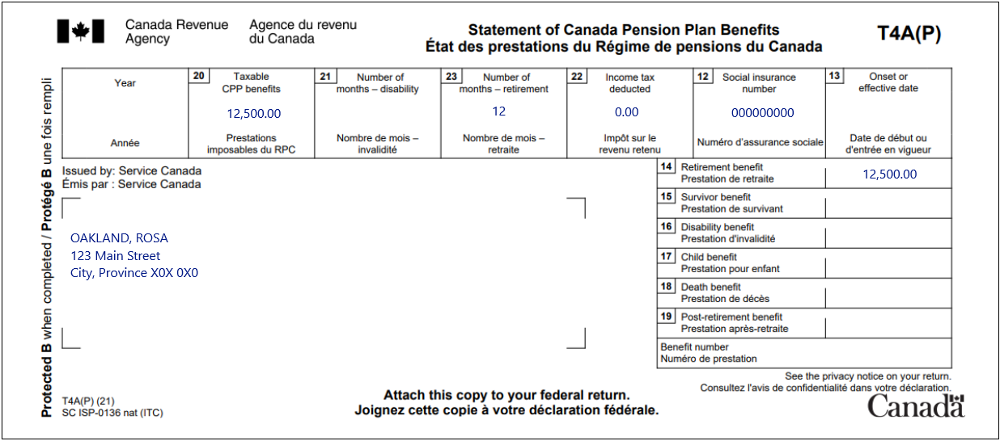
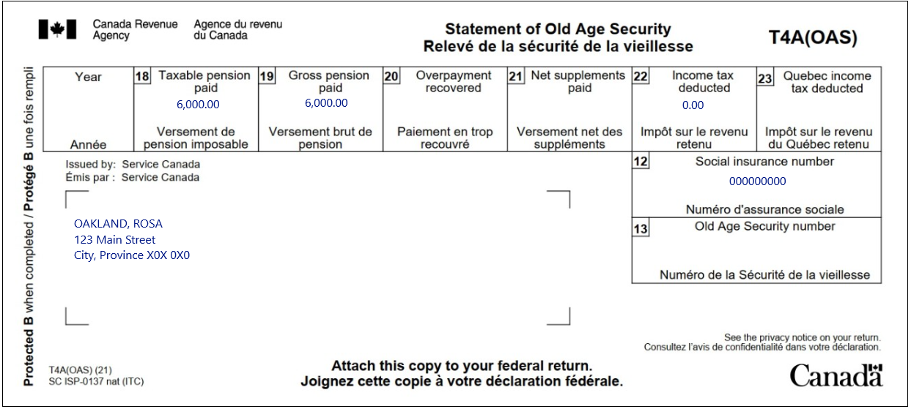

Reporting tax exempt social assistance payments
Pre-test question
Sorry, that's incorrect.
That's correct
Not all income is tax exempt under the Indian Act, regardless of where the individual lives or works. For example, Old Age Security (OAS) benefits are not tax exempt under the Indian Act.
Instructions
- Open the tax software
- Review the Background information and Required slips (tax slips, receipts, etc.)
- Provide all required information for the appropriate sections of the tax software
- Once completed, compare your results with the solution provided
- Afterwards, refer to the Takeaway points
Background information
Situation
Rosa lives on a reserve and she received $6,000 in OAS payments, and $12,500 in Canada Pension Plan (CPP) of which $10,000 is tax-exempt. Rosa also received $5,000 in social assistance from the band council for which she has a letter from the band council that explains the social assistance payments.
Identification information
| Name | Rosa Oakland |
|---|---|
| Social insurance number (SIN) | 000 000 000 |
| Address | 123 Main Street City, Province X0X 0X0 |
| Date of birth | November 22, 1939 |
| Marital status | Single |
Required slips
T4A(P) - Statement of Canada Pension Plan Benefits
Text version of the T4A(P)
T4 - Statement of Canada Pension Plan Benefits
Protected B
Sent by Service Canada
Oakland Rosa
123 Main Street
City Province X0X 0X0
Box 20: Taxable CPP benefits: 12,500.00
Box 23: Number of months – retirement: 12
Box 22: Income tax deducted: 0.00
Box 12: Social insurance number: 000 000 000
Box 14: Retirement benefit: 12,500.00
T4A (OAS) – Statement of Old Age Security
Text version of the T4A (OAS)
T4A (OAS) – Statement of Old Age Security
Protected B
Sent by Service Canada
Oakland, Rosa
123 Main Street
City, Province X0X 0X0
Box 18: Taxable pension paid: 6,000.00
Box 19: Gross pension paid: 6,000.00
Box 22: Income tax deducted: 0.00
Box 12: Social insurance number: 000 000 000
Review your results
Solutions will be available in February 2023 as printable PDF.
Takeaway points
Steps to follow
- Review their background information and the required slips
- In the Interview setup, check the boxes next to:
- Tax return for a Status Indian in the Specific situations section and Employment income and employment insurance benefits (T4, T4E/RL-6) in the Employment and other benefits section
- Social assistance, worker’s compensation (T5007/RL-5) in the Employment and other benefits section
- Pension income, other income and split pension income, COVID-19 benefits (T4A, T4A(OAS), T4A(P), T4A-RCA, T4RSP, T4RIF, T1032) in the Pension section
- Click Status Indian in the left side menu and select Yes at the field, Please confirm that you are a registered Indian, or entitled to be registered as an Indian under the Indian Act
- Enter $10,000 in the field for CPP/QPP benefits. Enter $5,000 in the field for Exempt social assistance payments
- Click Social assistance, worker’s compensation in the left side menu and click the + sign next to T5007-Worker’s compensation benefits, social assistance, etc. (federal lines 14400, 14500, 14600). Enter $5,000 in field 11
- Click T4 and pension income in the left side menu and click the + sign next to T4A(P) – Statement of Canada pension plan benefits.. Enter $12,500 in field 14, and enter 12 in field 23
- Click T4A and pension income in the left side menu and click the + sign next to T4A (OAS) – Old age security pension income. Enter the information on the T4A(OAS) into the software
Rosa’s social assistance payments are tax exempt because she lives on a reserve, has Indian status and received the payments from a First Nation or band council. They are not reported on line 14500 and there is no deduction on line 25000. The software will automatically report income exempt under the Indian Act on form T90.
For more information refer to UFile instructions.